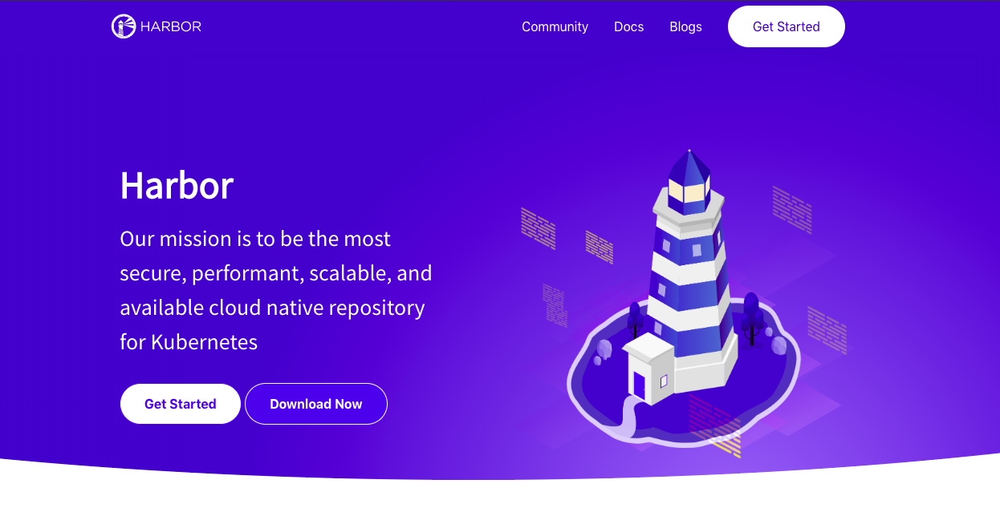
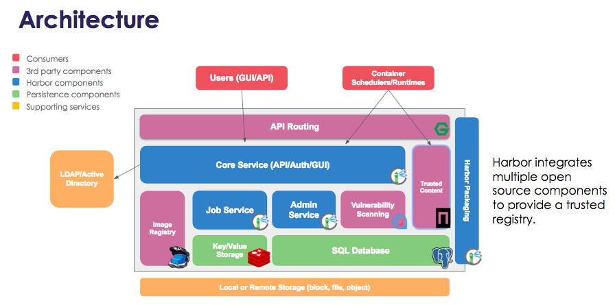
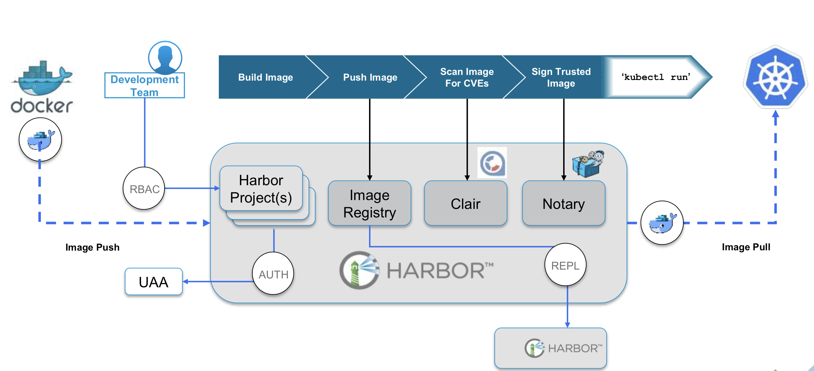
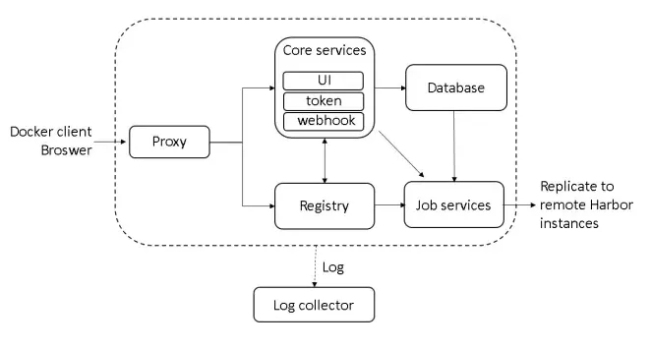
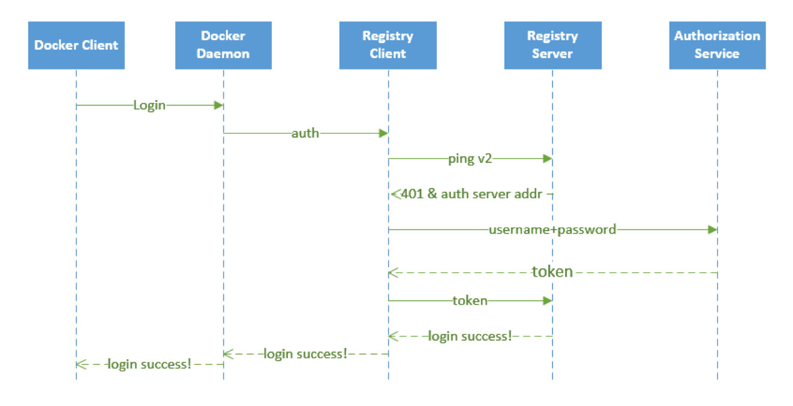
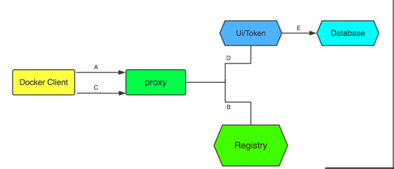
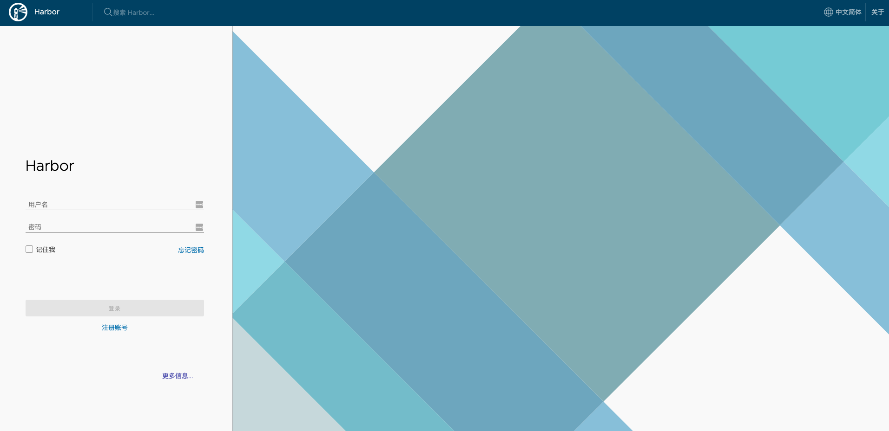
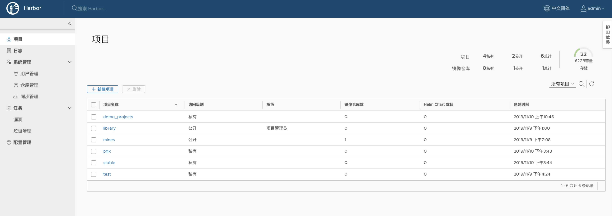
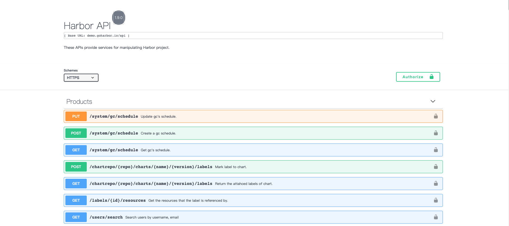

Kuternetes 企业级 Docker 私有仓库 Harbor 工具
当然，我们这里也可以使用 Docker 官方提供的 registry 镜像！
$ docker run -d -p 5000:5000 --restart=always --name registry registry:2

1. Harbor 基本组件
企业级环境中基于 Harbor 搭建自己的安全认证仓库
Docker 容器应用的开发和运行离不开可靠的镜像管理，虽然 Docker 官方也提供了公共的镜像仓库，但是从安全和效率等方面考虑，部署我们私有环境内的 Registry 也是非常必要的。Harbor 是由 VMware 公司开源的企业级的 Docker Registry 管理项目，它包括权限管理(RBAC)、AD/LDAP集成、日志审核、管理界面、自我注册、镜像复制和中文支持等功能，在新版本中还添加了Helm仓库托管的支持。

Harbor 的每个组件都是以 Docker 容器的形式构建的，使用 Docker Compose 来对它进行部署。用于部署 Harbor 的 Docker Compose 模板位于 /Deployer/docker-compose.yml 中，其由 5 个容器组成，这几个容器通过 Docker link 的形式连接在一起，在容器之间通过容器名字互相访问。对终端用户而言，只需要暴露 Proxy(即Nginx) 的服务端口即可。
- Proxy
- 由
Nginx服务器构成的反向代理
- 由
- Registry
- 由
Docker官方的开源官方的开源Registry镜像构成的容器实例
- 由
- UI
- 即架构中的
core services服务，构成此容器的代码是Harbor项目的主体
- 即架构中的
- MySQL
- 由官方
MySQL镜像构成的数据库容器
- 由官方
- Log
- 运行着
rsyslogd的容器，通过log-driver的形式收集其他容器的日志
- 运行着
2. Harbor 特性解释
主要介绍 Harbor 工具的特性和优点

- [1] 基于角色控制
- 用户和仓库都是基于项目进行组织的，而用户基于项目可以拥有不同的权限
- [2] 基于镜像的复制策略
- 镜像可以在多个
Harbor实例之间进行复制实例之间进行复制
- 镜像可以在多个
- [3] 支持 LDAP
Harbor的用户授权可以使用已经存在LDAP用户
- [4] 镜像删除&垃圾回收
Image可以被删除并且回收Image占用的空间
- [5] 用户 UI
- 用户可以轻松的浏览、搜索镜像仓库以及对项目进行管理
- [6] 轻松的部署功能
Harbor提供了提供了online/offline/virtualappliance安装
- [7] Harbor 和 docker registry 关系
Harbor实质上是对docker registry做了封装，扩展了自己的业务模块
3. Harbor 认证过程
认证过程是理解其精髓的核心知识点
Harbor 最核心的功能就是给 docker registry 添加上一层权限保护的功能，要实现这个功能，就需要我们在使用 docker login、pull、push 等命令的时候进行拦截，先进行一些权限相关的校验再进行操作，其实这一系列的操作 docker registry v2 就已经为我们提供了支持，v2 版本集成了一个安全认证的功能，将安全认证暴露给外部服务，让外部服务去实现。

下述就是完整的授权过程，当用户完成下述过程以后便可以执行相关的pull/push操作，认证信息会每次都带在请求头中。
- [a]
docker daemon从docker registry拉取镜像。 - [b] 如果
docker registry需要进行授权时，registry将会返回401响应，同时在响应中包含了docker client如何进行认证的信息。 - [c]
docker client根据registry返回的信息，向auth server发送请求获取认证token信息。 - [d]
auth server则根据自己的业务实现去验证提交的用户信息是否存符合业务要求。 - [e] 用户数据仓库返回用户的相关信息。
- [f]
auth server将会根据查询的用户信息，生成token令牌，以及当前用户所具有的相关权限信息。 - [g]
docker client端接收到返回的200状态码说明操作成功，在控制台上打印Login Succeeded的信息。


4. Harbor 配置要求
配置要求主要受限于硬件要求
- [1] Hardware
| Resource | Minimum | Recommended |
|---|---|---|
| CPU | 2 CPU | 4 CPU |
| Mem | 4 GB | 8 GB |
| Disk | 40 GB | 160 GB |
- [2] Software
| Software | Version | Description |
|---|---|---|
| Docker engine | version 17.06.0-ce+ or higher | For installation instructions, see docker engine doc |
| Docker Compose | version 1.18.0 or higher | For installation instructions, see docker compose doc |
| Openssl | latest is preferred | Used to generate certificate and keys for Harbor |
- [3] Network ports
| Port | Protocol | Description |
|---|---|---|
| 443 | HTTPS | Harbor portal and core API accept HTTPS requests on this port. You can change this port in the configuration file. |
| 4443 | HTTPS | Connections to the Docker Content Trust service for Harbor. Only required if Notary is enabled. You can change this port in the configuration file. |
| 80 | HTTP | Harbor portal and core API accept HTTP requests on this port. You can change this port in the configuration file. |
- [4] Harbor Components
| Number | Component | Version |
|---|---|---|
| 1 | Postgresql | 9.6.10-1.ph2 |
| 2 | Redis | 4.0.10-1.ph2 |
| 3 | Clair | 2.0.8 |
| 4 | Beego | 1.9.0 |
| 5 | Chartmuseum | 0.9.0 |
| 6 | Docker/distribution | 2.7.1 |
| 7 | Docker/notary | 0.6.1 |
| 8 | Helm | 2.9.1 |
| 9 | Swagger-ui | 3.22.1 |
5. Harbor 安装步骤
- [1] 官网主页
https://github.com/goharbor/harbor/releases
- [2] 选择合适的资源包
# Online installer
harbor-offline-installer-v1.9.2.tgz 605 MB
harbor-offline-installer-v1.9.2.tgz.asc 833 Bytes
# Online installer
harbor-online-installer-v1.9.2.tgz 8.2 KB
harbor-online-installer-v1.9.2.tgz.asc 833 Bytes
- [3] 解压对应安装包
# Online installer
$ tar xvf harbor-online-installer-version.tgz
# Offline installer
$ tar xvf harbor-offline-installer-version.tgz
# Mv to /usr/local dir
$ sudo mv harbor /usr/local
- [4] 修改 harbor.cfg 配置文件
# Harbor版本
_version = 1.5.0
# 设置访问地址; 可以使用IP/域名(必须)
hostname = docker.escaplife.site
# 默认服务是走http协议，当然也可以设置为https协议(必须)
# 如果设置https协议的话，则nginx ssl选项也是需要设置on的
ui_url_protocol = https
# Job最大进程数; 默认值为3
max_job_workers = 50
# 是否创建证书,创建证书将会在下面的路径下生成(必须)
customize_crt = on
ssl_cert = /data/cert/server.crt
ssl_cert_key = /data/cert/server.key
# 私钥存储路径
secretkey_path = /data
# 设置日志大小
admiral_url = NA
log_rotate_count = 50
log_rotate_size = 200M
# 是否使用代理
http_proxy = xxx
https_proxy = xxx
no_proxy = 127.0.0.1,localhost,ui
# 邮箱设置，发送重置密码邮件时使用
email_identity = xxx
email_server = smtp.mydomain.com
email_server_port = 25
email_username = sample_admin@mydomain.com
email_password = abc
email_from = admin <sample_admin@mydomain.com>
email_ssl = false
email_insecure = false
# 安装Harbor后管理员UI登陆的密码，默认是Harbor12345
harbor_admin_password = Harbor12345
# 认证方式；比如LDAP、数据库认证，默认是db_auth方式
auth_mode = db_auth
# LDAP认证时配置项
ldap_url = ldaps://ldap.mydomain.com
ldap_basedn = ou=people,dc=mydomain,dc=com
ldap_uid = uid
ldap_scope = 2
ldap_timeout = 5
ldap_verify_cert = true
ldap_group_basedn = ou=group,dc=mydomain,dc=com
ldap_group_filter = objectclass=group
ldap_group_gid = cn
ldap_group_scope = 2
#是否开启自动注册
self_registration = on
# Token有效时间，默认30分钟
token_expiration = 30
# 用户创建项目权限控制，默认是everyone(所有人)，也可以设置为adminonly(管理员)
project_creation_restriction = everyone
# Mysql数据库root用户默认密码root123，根据实际时使用来进行修改
db_host = mysql
db_password = root123
db_port = 3306
db_user = root
# Redis配置
redis_url = redis:6379
clair_db_host = postgres
clair_db_password = password
clair_db_port = 5432
clair_db_username = postgres
clair_db = postgres
uaa_endpoint = uaa.mydomain.org
uaa_clientid = id
uaa_clientsecret = secret
uaa_verify_cert = true
uaa_ca_cert = /path/to/ca.pem
registry_storage_provider_name = filesystem
registry_storage_provider_config = xxx
- [5] 创建 https 证书以及配置相关目录权限
# 创建证书目录
$ sudo mkdir /data/cert
# 生成私钥
$ sudo openssl genrsa -des3 -out server.key 2048
# 创建证书请求
$ sudo openssl req -new -key server.key -out server.csr
# 备份私钥
$ sudo cp server.key server.key.org
# 私钥去除密码
$ sudo openssl rsa -in server.key.org -out server.key
# 签名证书
$ sudo openssl x509 -req -days 365 -in server.csr -signkey server.key -out server.crt
# 赋值权限
$ sudo chmod -R 777 /data/cert
- [6] 运行脚本进行安装
$ sudo cd /usr/local/harbor
$ sudo ./install.sh
- [7] 访问测试
# 各节点配置/etc/hosts文件
192.168.3.23 reg.escaplife.com
# 访问自己配置的域名地址
https://reg.escaplife.com
# 默认管理员用户密码
admin/Harbor12345
- [8] 上传和下载镜像进行测试
# 指定Docker信任我们搭建的私有镜像仓库地址
$ sudo vim /etc/docker/daemon.json
{
......
"insecure-registries": ['https://reg.escaplife.com'],
......
}
# 下载镜像测试
$ docker pull escape/nginx-test:v1
# 推送镜像测试
$ docker tag escape/nginx-test:v1 reg.escaplife.com/library/nginx-test:v1
$ docker pull reg.escaplife.com/library/nginx-test:v1
# 用户登录测试
$ docker login https://reg.escaplife.com
# 启动容器测试
$ kubectl run nginx-deployment \
--image=reg.escaplife.com/library/nginx-test:v1 \
--port=80 --replicas=1
# 通过IPVS查看对应规则
$ sudo ipvsadm -Ln


